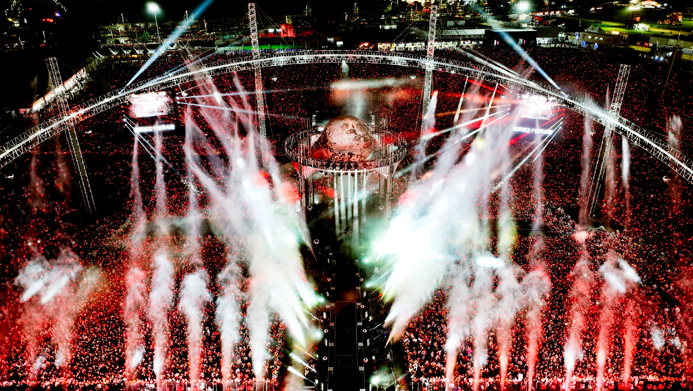
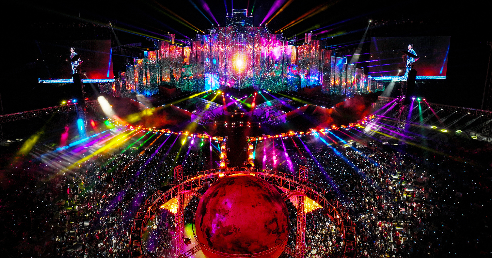
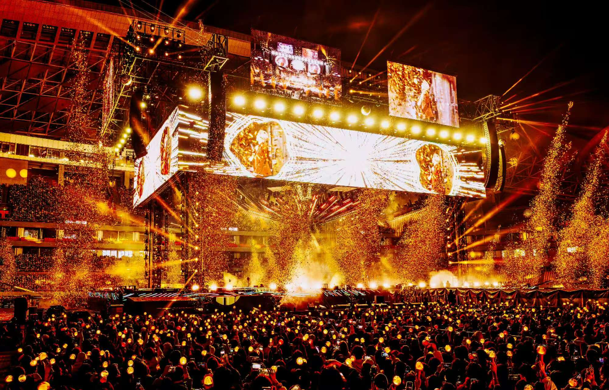
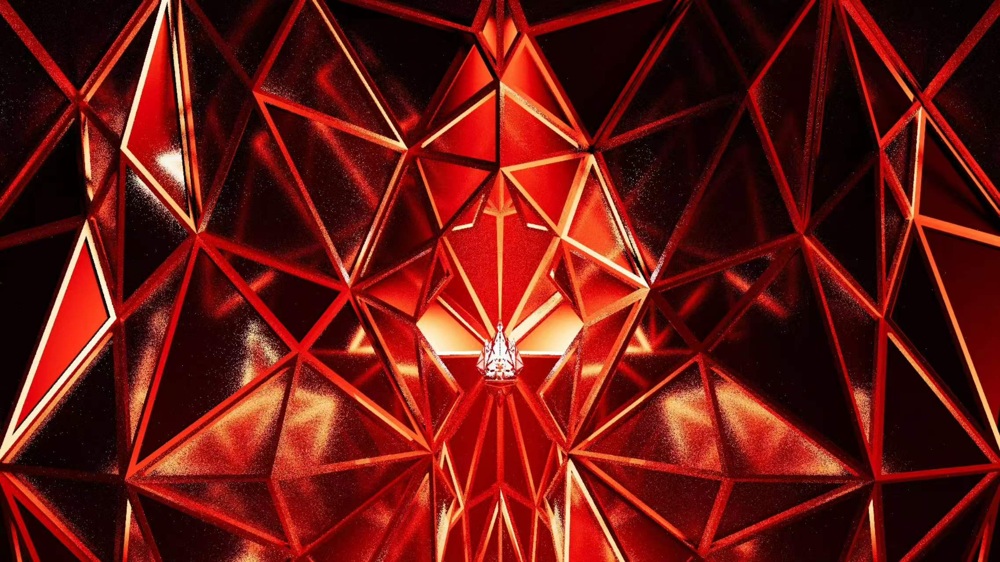

火星演唱会
「 欢迎回家，火星人 」
2014年，华晨宇出道未满一年，即取“火星”的概念，开启了名为“火星演唱会”的个人演唱会品牌，英译为“MARS CONCERT”。华晨宇在介绍演唱会时，希望能带歌迷“离开地球到火星”，并且每一次演唱会对歌迷说的第一句话是“欢迎回家”。而来到演唱会的歌迷也互相称为“火星的家人”。
为了更好实现火星 “回家”的概念，2021年，华晨宇在海口长影环球100奇幻乐园举办了打磨了三年的、全新形式的演唱会。取“火星演唱会”和“乐园”的概念，融合创新出集音乐演出与吃喝玩乐等多重体验于一体的户外乐园形式，被称为“火星乐园”。
火星演唱会·四面台纪元
“火星演唱会”的不断完善与创新，早已使其成为国内首屈一指的演唱会厂牌，也蕴含着无数火星人“不想结束的梦境”。作为梦境发起者，华晨宇始终致力于将自我理想与歌迷理想一一实现，无限刷新着外界对于美好的感叹。
每一次“春暖花开”的起航与落幕，旨在用音乐架起与歌迷、与世界沟通的桥梁，旨在于梦境的制高点治愈人心，诸多绚烂与美好背后，则是无数日夜的付出。

荒土中的花园·乐园1.0
“荒芜之上 • 春暖花开”
以「无上」为名，取“无出其上”之意
传说中，火星曾是一个生机勃发的星球。但在40亿年前，火星的生命之源“无上”树屋（内生磁场发电机）因为意外渐渐枯萎，无法提供能量，火星慢慢成为了一片寒冷死寂，荒芜干旱的世界。
火星上的人类生物，也因此离开曾经的家园，流浪在太阳系之中、在其他星球扎根。传说只有遇到“火星之子”才能重启“树屋”，重建华晨宇火星游乐园。
2021年11月26日，一个孤独却又向往自由的音乐灵魂“火星之子”——华晨宇终于出现，带着他的ET同族们，即将踏上“回家”的征程，登陆火星，开启树屋，春暖花开，召唤快乐与美好。

未绽放的花苞·乐园2.0
以几何为笔，于湖畔铺展火星新章。告别过往思辨，于流动中寻永恒，于变化中守本心。
以「三角形」为核心元素，拆解重组，融稳固与灵动，筑造「不断流动变化的几何美学世界」。
突破常规舞台桎梏，打造「从无到有」的舞台，让自然与艺术共生，光影与旋律同频。舞台随音乐呼吸变幻，每一次流转皆藏惊喜，每一束光影皆应热爱。
以匠心藏永恒之题，以光影赴双向之约。
谜底静待，共赏火星美学盛宴。
